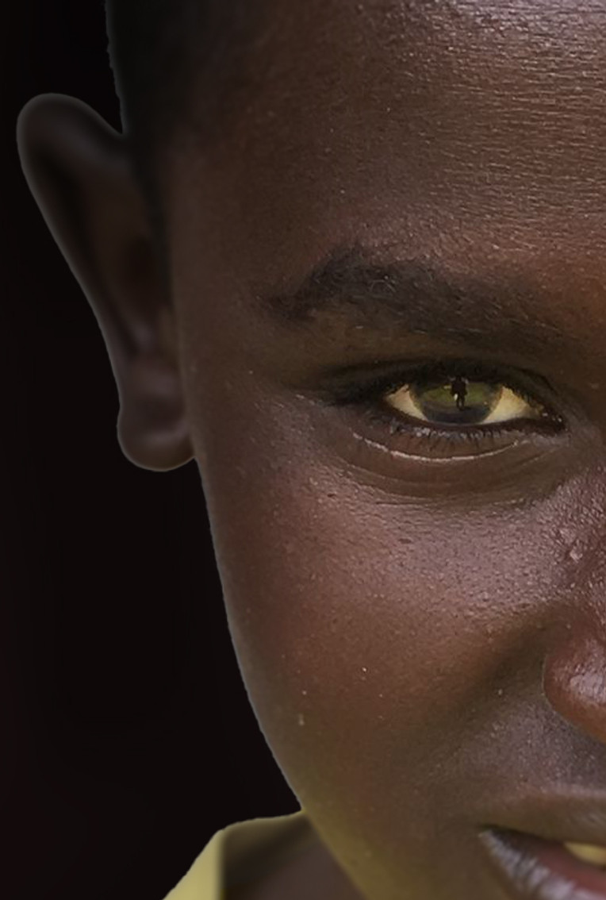

Sight restoration & vision research
Our Mission
In sub-Saharan Africa, cataracts account for about a quarter of childhood blindness, yet many children remain untreated due to a lack of diagnosis and adequate care.
Founded in Ethiopia in 2013 by Prof. Ehud Zohary and Dr. Itay Ben Zion, Project Eye-Opener helps children who have been blind from birth for 4–20 years regain their sight through surgery, therapy, and scientific evaluation.
These rare cases offer a unique opportunity to study vision recovery beyond the “critical period” once thought to limit brain development. Insights gained could inform future treatments for congenital blindness, including breakthrough technologies such as retinal implants.
By restoring sight, we’re opening eyes and doors to a brighter future for all.
Discover the project ↗
children were operated in Project Eye Opener and regained sight
sites take part in the project: two hospitals and three schools for the blind
scientific papers based on the project have been published in peer-reviewed journals
Researchers, students, and local team members collaborate internationally
Our story
A journey of
opening eyes.
From a pediatric eye service in Ethiopia to an international collaboration in sight restoration.
- 2007Dr. Itay Ben-Zion spends a voluntary year in Ethiopia, establishes a pediatric eye service at Hawassa University, and restores sight to hundreds of children.
- 2011Dr. Ehud Zohary and Dr. Ben-Zion begin collaborating to combine scientific research on early blindness with life-changing surgical treatment for children.
- 2013First children surgically treated under Project Eye Opener
- 2014Launch of the Rehabilitation Program Implementation of Dr. Uri Polat perceptual learning techniques begins at the Sheshemene Blind School in Ethiopia.
- 2015Project expands to Wolayta and Sebeta
- 2017Project expands to Bako
- 2019Project expands to Jinka
- TodayOngoing treatments and assessments
Explore our work